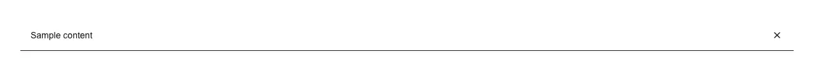

A dismissible bar pinned above your header for a message the whole site needs to see: a launch or new release, a promo, sale or free-shipping offer, a scheduled-maintenance or downtime window, an incident or status notice, a beta or early-access note, a cookie or GDPR notice, a plan-expiring or payment-failed warning, or a 'you are viewing the docs for an old version' banner. Give it an id and it remembers the dismissal in localStorage, so a visitor who closes it does not meet it again on the next page or the next visit; bump version (or the id) when the wording changes and it comes back for everyone. It renders nothing until it has mounted, which is the part that is easy to get wrong on your own: reading localStorage while rendering makes the server and the browser disagree and React throws a hydration mismatch, and rendering the bar first and hiding it afterwards flashes a banner the user already dismissed on every single page load. The bar is a labelled landmark region rather than a plain div, so it is reachable by landmark navigation instead of being an unnamed strip of text before the header; the close button has a real accessible name and a focus ring, the leading icon is aria-hidden because it repeats the text, and dismissible={false} drops the button entirely for a banner that must stay put. Two looks — primary is a solid accent bar, default is a muted bar with a bottom border — both from shadcn tokens, so it follows light and dark with the rest of your theme. Takes an action slot for the trailing 'Read more' or 'Upgrade' link and calls onDismiss so you can log it. Official shadcn/ui has nothing that does this: alert is a static box that cannot be closed and remembers nothing, alert-dialog is a modal that blocks the page until answered, and sonner is a toast that floats in and disappears on a timer — none of them is a persistent top-of-page bar, and none of them survives a page load. lucide-react is the only dependency, for the close icon.

Rendered on the shadcn default neutral palette with harness-generated props.
pnpm dlx shadcn@4.21.0 add @pulld/announcement-bar
| licence | POINTER |
|---|---|
| primitive base | none |
| type | registry:ui |
| files | src/components/ui/announcement-bar.tsx |
| npm deps pulled | none beyond the pre-installed peer set |
| registry deps | — |
| semantic / palette / hex | 12 / 0 / 0 |
| writes shared ui/ | yes — can overwrite the project’s own primitives |